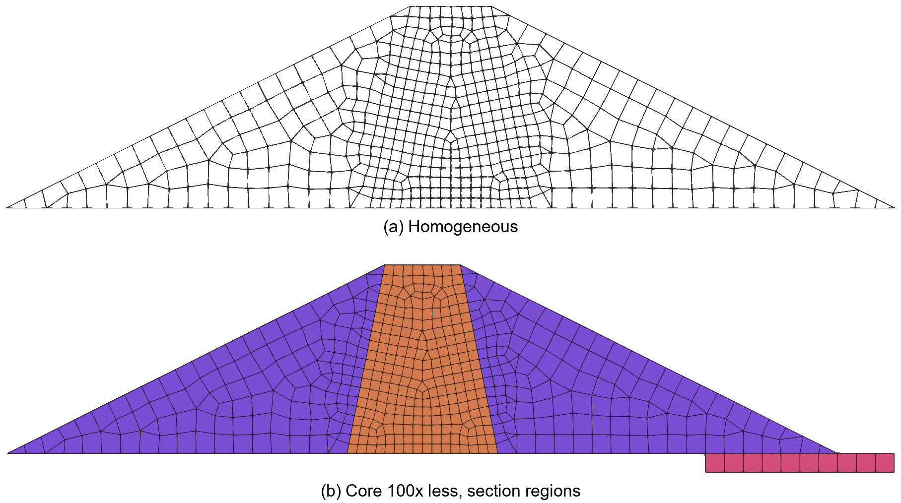
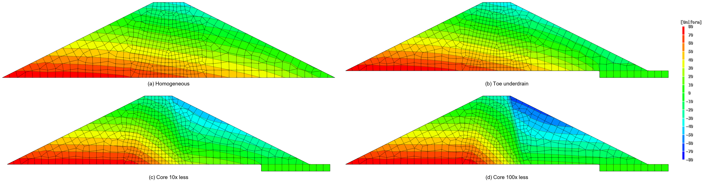
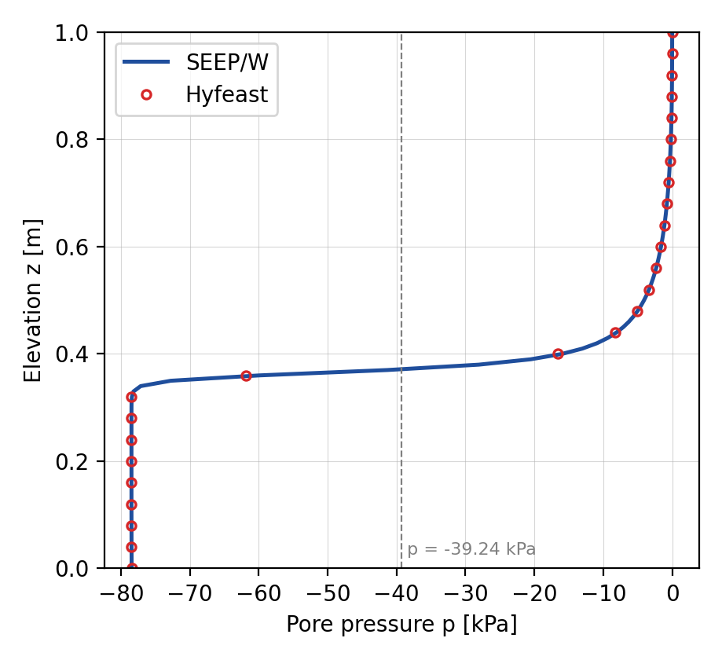
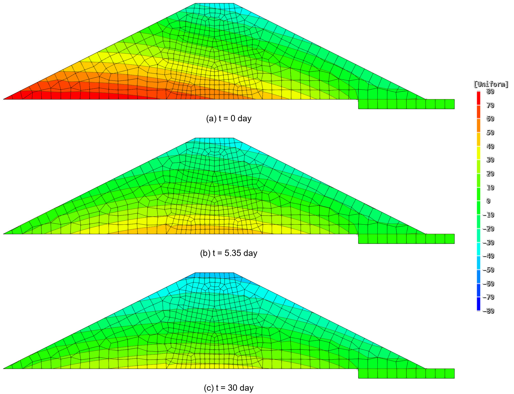
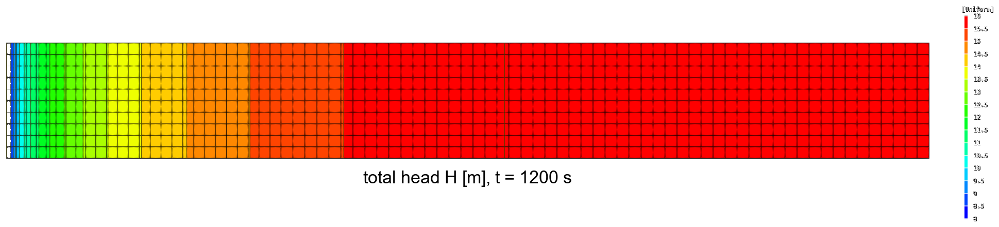
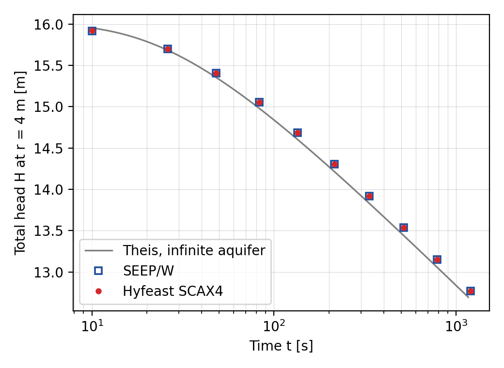

V.18 Seepage Comparison with SEEP/W
Four example and verification problems of GeoStudio SEEP/W 2025.1 are reproduced in Hyfeast and compared with the stored SEEP/W results. The source model files and the extracted comparison data are in Example/V.18 Seepage Comparison with SEEPW/SeepW-Reference/.
V.18.1 Steady Earth Dam
A trapezoidal earth dam \(10\ \mathrm{m}\) high with a \(44\ \mathrm{m}\) base is analyzed as a two-dimensional steady seepage problem. The model spans \(3\le x\le47\ \mathrm{m}\) and \(0\le y\le10\ \mathrm{m}\). The upstream reservoir holds a total head \(H=8\ \mathrm{m}\), the downstream slope is a potential seepage face, and the downstream toe has \(H=0\). Four configurations of the same geometry are compared.
Table V.18.1 Earth Dam Cases
| Case | Additional region | Elements / active nodes |
|---|---|---|
| Homogeneous | None | 501 / 540 |
| Toe underdrain | Saturated drain at the downstream toe | 511 / 554 |
| Core 10x less | Core and drain, core permeability 1/10 of the fill | 511 / 554 |
| Core 100x less | Core and drain, core permeability 1/100 of the fill | 511 / 554 |

Figure V.18.1 Earth Dam Mesh and Section RegionsThe saturated permeability of the general fill is \(K_s=1.0\times10^{-5}\ \mathrm{m/s}\), the cores have \(1.0\times10^{-6}\) and \(1.0\times10^{-7}\ \mathrm{m/s}\), and the drain is a saturation-only material with \(K_s=1\ \mathrm{m/s}\). The water unit weight is \(\gamma_w=9.807\ \mathrm{kN/m^3}\). The unsaturated permeability curve approximates the 20-point SEEP/W table with the following van Genuchten-Mualem parameters, whose maximum relative error at the table points is 0.71%.
The mesh keeps the SEEP/W node numbers and element connectivity, so nodal values are compared without interpolation. The nodal pressures, the location of the zero-pressure phreatic surface, and the steady discharge are compared. The pressure NRMSE is the root-mean-square of the nodal pressure differences divided by \(78.456\ \mathrm{kPa}\), the pressure equivalent of the upstream head, and the acceptance criteria are a pressure NRMSE of 1% and a relative discharge error of 5%.
Table V.18.2 Earth Dam Comparison Results
| Case | Pressure NRMSE | Maximum phreatic-surface difference | Relative discharge error |
|---|---|---|---|
| Homogeneous | 0.0015% | \(0.001315\ \mathrm{m}\) | 0.0079% |
| Toe underdrain | 0.0068% | \(0.005384\ \mathrm{m}\) | 0.0289% |
| Core 10x less | 0.0027% | \(0.001564\ \mathrm{m}\) | 0.0021% |
| Core 100x less | 0.0110% | \(0.000750\ \mathrm{m}\) | 0.0004% |

Figure V.18.2 Pore Pressure p [kPa] of the Four Earth Dam CasesAll four cases pass the criteria. Note that the material is the VGM approximation above rather than the SEEP/W table function, so the agreement holds under the approximated material. The SEEP/W extracts and the node-by-node comparison tables are in SeepW-Reference/reference-data/steady-earth-dam/.
Input File
seepw-earth-dam-homogeneous.inp: Homogeneousseepw-earth-dam-toe-underdrain.inp: Toe underdrainseepw-earth-dam-core-10x-less.inp: Core 10x lessseepw-earth-dam-core-100x-less.inp: Core 100x less
V.18.2 Transient Dry-Soil Infiltration
Water infiltrates from the top into a very dry soil column \(1\ \mathrm{m}\) high. The initial pore pressure is \(-78.48\ \mathrm{kPa}\) throughout, and when the transient analysis starts the top pressure is raised to zero while the bottom pressure head is held at \(-8\ \mathrm{m}\). The wetting front moves downward with time.
The SEEP/W original has 101 nodes and 100 one-dimensional line elements. Hyfeast has no one-dimensional seepage element, so a two-dimensional strip \(0.01\ \mathrm{m}\) wide and \(1\ \mathrm{m}\) high is divided into 100 SC2D4 elements in the vertical direction with no-flow side boundaries. The pressures of the paired left and right nodes are checked to be equal so that the two-dimensional conversion does not affect the result.
The saturated permeability is \(K_s=1.0\times10^{-6}\ \mathrm{m/s}\) and the specific storage is \(S_s=9.97788\times10^{-5}\ \mathrm{m^{-1}}\). The water-content and relative-permeability curves are given as a User material from the 20-point SEEP/W tables, and the relative-permeability curve uses shape-preserving cubic interpolation in log-log space (DataCurve). The time increment is \(468\ \mathrm{s}\), and 100 increments cover \(46{,}800\ \mathrm{s}\) in total with TUnit=s.
The final pressure profile, the elevation of the wetting front at \(p=-39.24\ \mathrm{kPa}\), and the top unit flux are compared. The acceptance criteria are a pressure NRMSE of 1%, a wetting-front difference of \(0.01\ \mathrm{m}\), and a relative flux error of 5%.
Table V.18.3 Dry-Soil Infiltration Results
| Quantity | SEEP/W | Hyfeast | Difference |
|---|---|---|---|
| Pressure NRMSE | 0.478% | ||
| Wetting-front elevation | \(0.371589\ \mathrm{m}\) | \(0.372475\ \mathrm{m}\) | \(0.000886\ \mathrm{m}\) |
| Final top unit flux | \(1.02112\times10^{-6}\ \mathrm{m/s}\) | \(1.02162\times10^{-6}\ \mathrm{m/s}\) | 0.049% |

Figure V.18.3 Final Pressure Profile of the Dry-Soil InfiltrationAll three criteria pass. Note that the comparison replaces the one-dimensional problem with a two-dimensional strip. The SEEP/W extracts and the depth-wise comparison table are in SeepW-Reference/reference-data/transient-dry-soil-user/.
Input File
seepw-transient-dry-soil-infiltration.inp
V.18.3 Rapid Drawdown
An earth dam with a reservoir level \(H=8\ \mathrm{m}\) is first analyzed in the steady state, and its pressure field is the initial state of the transient analyses. The model spans \(3\le x\le50\ \mathrm{m}\) and \(-1\le y\le10\ \mathrm{m}\) with 553 nodes. The saturated permeability of the general fill is \(1.0\times10^{-6}\ \mathrm{m/s}\), that of the toe drain is \(1.157\times10^{-5}\ \mathrm{m/s}\), and the specific storage is \(S_s=9.82583\times10^{-4}\ \mathrm{m^{-1}}\). The water content and relative permeability are given as a User material from the SEEP/W tables. All transient steps use TUnit=day, the same unit as SEEP/W.
Instantaneous drawdown. The upstream head load is removed immediately after the steady state. The upstream slope becomes a potential seepage face, and the upstream toe and the drain have a total head of zero. The pressure fields at the ten stored times from 0.25 day to 30 days are compared.
Slow drawdown. The reservoir level is lowered linearly from \(8\ \mathrm{m}\) to zero over 5 days. When the level falls below the elevation of an upstream-slope node, the head load of that node is released and the node becomes a seepage-face candidate. Two inputs represent this process.
- Staged boundary: the process is divided into 27 steps combining the 17 node-crossing times and the 10 stored times, and each step switches the exposed nodes directly to the potential seepage face. The end time of each step is given with
Given, and only that time is stored withOutTime. SeepageWaterLevel: a single transient step lowers the level continuously through a time function.Givencontains the 27 boundary-node crossing times so that every boundary change is resolved exactly, andOutTimekeeps only the ten comparison times.
The nonlinear iteration tolerance is the SEEP/W maximum pressure-head difference of \(0.005\ \mathrm{m}\) converted to pressure, \(\Delta p=\gamma_w\Delta h=0.049035\ \mathrm{kPa}\). The acceptance criterion is a pressure NRMSE of 1% at every stored time.
Table V.18.4 Rapid Drawdown Results
| Scenario | Maximum pressure NRMSE | Maximum nodal pressure difference |
|---|---|---|
| Instantaneous drawdown | 0.183% | \(0.46510\ \mathrm{kPa}\) |
| Slow drawdown, staged boundary | 0.188% | \(0.49296\ \mathrm{kPa}\) |
Slow drawdown, SeepageWaterLevel |
0.188% | \(0.49296\ \mathrm{kPa}\) |

Figure V.18.4 Pore Pressure p [kPa] during the Instantaneous DrawdownAll ten stored times of the three scenarios pass the criterion. The SeepageWaterLevel input reproduces the accuracy of the staged-boundary input in a single step. The SEEP/W extracts and the time-wise comparison tables are in SeepW-Reference/reference-data/rapid-drawdown/.
Input File
seepw-rapid-drawdown-instantaneous.inp: instantaneous drawdownseepw-rapid-drawdown-slow.inp: slow drawdown, staged boundary in 27 stepsseepw-rapid-drawdown-slow-water-level.inp: slow drawdown,SeepageWaterLevel
V.18.4 Axisymmetric Pumping Well
This is the SEEP/W 2025.1 verification problem "Radial flow to a well", a transient pumping problem in a 360-degree axisymmetric saturated aquifer. The domain is \(0.15\le r\le40\ \mathrm{m}\) and \(0\le z\le5\ \mathrm{m}\). The mesh of 891 nodes and 800 quadrilateral elements, built from 81 radial and 11 vertical coordinates, is transferred as is to SCAX4 elements.
The saturated permeability is \(k=0.002\ \mathrm{m/s}\) and the water unit weight is \(\gamma_w=9.807\ \mathrm{kN/m^3}\). The source coefficient of volume compressibility \(m_v=0.001\ \mathrm{kPa^{-1}}\) converts to the specific storage \(S_s=m_v\gamma_w=0.009807\ \mathrm{m^{-1}}\); the \(S_s=0.01\ \mathrm{m^{-1}}\) in the official document is the rounded value. The whole domain is initialized in the steady state at \(H_0=16\ \mathrm{m}\), and in the transient step the outer boundary \(r=40\ \mathrm{m}\) is held at \(H=16\ \mathrm{m}\) while \(q=-0.025\ \mathrm{m/s}\) is applied on the well face \(r_w=0.15\ \mathrm{m}\). The total pumping rate is
The analysis uses Given at the SEEP/W stored times 10, 26, 48, 83, 135, 214, 334, 514, 788, and 1200 seconds. The total head at \(r=4\ \mathrm{m}\), \(z=2.5\ \mathrm{m}\) is compared directly with the stored SEEP/W values, and the sum of the equivalent nodal fluxes on the well face and its time integral are compared with \(Q\) and \(Qt\) to check the \(2\pi r\,ds\) surface integration. The infinite-aquifer Theis solution is used as a secondary reference.
Table V.18.5 Pumping Well Results
| Quantity | Reference | Maximum difference |
|---|---|---|
| Total head at \(r=4\ \mathrm{m}\) | SEEP/W | \(0.001328\ \mathrm{m}\) |
| Sum of well-face fluxes | \(Q\) | Relative \(2.17\times10^{-6}\) |
| Cumulative pumped volume | \(Qt\) | Relative \(2.17\times10^{-6}\) |
| Total head at \(r=4\ \mathrm{m}\) | Theis solution, \(S=0.049035\) | \(0.10124\ \mathrm{m}\) |

Figure V.18.5 Total Head H [m] of the Pumping Well at t = 1200 s
Figure V.18.6 Total Head at r = 4 m Compared with SEEP/W and the Theis SolutionBecause the mesh and the stored times are identical, the head difference from SEEP/W mainly reflects the different time-integration schemes of the two programs. The difference from the Theis solution also contains the fixed-head outer boundary at radius \(40\ \mathrm{m}\) and the temporal and spatial discretization. The SEEP/W extracts are in SeepW-Reference/reference-data/axisymmetric-pumping-well/.
Input File
seepw-axisymmetric-pumping-well-scax4.inp